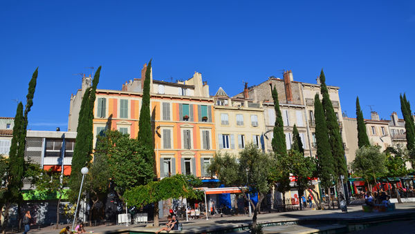

Notre-Dame-du-Mont
Le cœur battant de la culture marseillaise
Un agenda mensuel qui regroupe les concerts et événements musicaux des petites salles souterraines de Marseille
Une plateforme qui devient référence
Plateforme bien remplie et locale